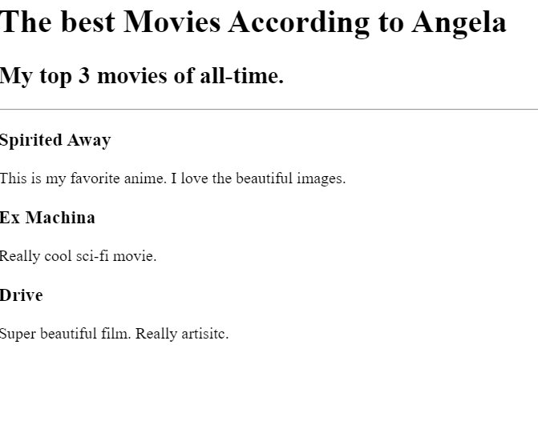

<!-- TODO 1: Create the HTML Boilerplate -->
<!DOCTYPE html>
<html lang="en">
    <header>
        <meta charset="UTF-8" />
        <title>my own site</title>
    </header>
    <body>
        <h1>Patricks Portfolio</h1>
        <h2>Im a web dev</h2>
        <hr/>
        <a href="./public/movielist.html">movie ranking project</a> 
        <br/>
        <br/>
         
        <br/>
        <a href="./public/birthday.html">birthday project</a> 
        <br/>
        <br/>
        
        <hr/>
        <a href="./public/about.html">About</a>
        <a href="./public/contact.html">Contact</a>
    </body>
</html>
<!-- TODO 2: Add Your previous projects' HTML into the public folder -->

<!-- TODO 3: Take screenshots of your project previews and add the images to the images folder -->

<!-- TODO 4: Add titles/subtitles etc. -->

<!-- TODO 5: Add a link to the project pages -->

<!-- TODO 6: Add images to show the project previews
HINT for TODO 6: You can use the height attribute set to 200 to make the image smaller:
https://developer.mozilla.org/en-US/docs/Web/HTML/Element/img#attr-height -->

<!-- TODO 7: Add the Contact Me and About Me page links -->